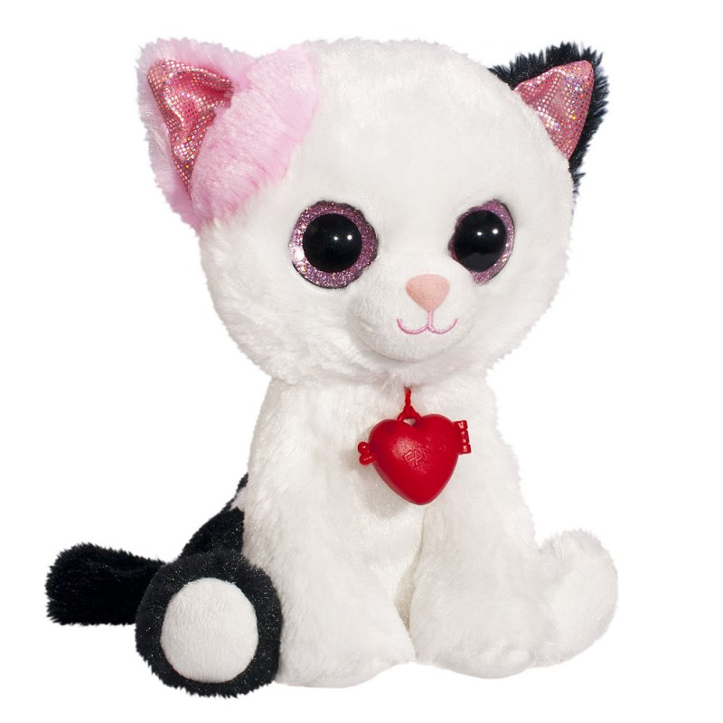

Кот фенсик
Мягкая игрушка Котик с большими розовыми глазками несомненно станет любимым мягким питомцем для Вашего малыша. Мягкий, приятный на ощупь и очень милый, он вызывает самые добрые и нежные чувства и у детишек, и у их родителей!
Глазки котика переливаются на солнечном цвете красивым нежным цветом, а шерстка у него двух цветов: розового, черного и белого. Кроме того, у малышка-котика есть специальный медальон-сердечко, который можно открывать и класть приятные маленькие мелочи.
Фенсики - слова, идущие от сердца, глаза, говорящие о чувствах!
